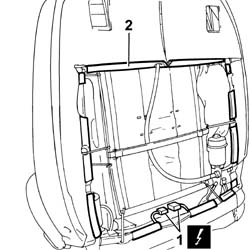
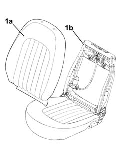
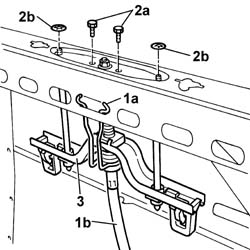
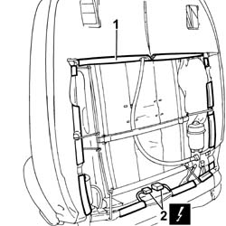

7045J67 Front seat head restraint lifting device (one), left or right - R.R. with seat removed
- Path
- Procedures > 70 FITTINGS > 7045 FRONT SEATS > 7045J FRONT SEAT MOVEMENT > 7045J67 Front seat head restraint lifting device (one), left or right - R.R. with seat removed
- Kind
- repair procedure (removal / refitting; the operation number is the code)
- Applies to
- all engines; all production periods
- Interactive page
- https://sloeber94.github.io/elrnDB-lThss/en/#/194871
Applies to: all engines; all production periods
 Removing
Removing
 Refitting
RefittingSee in Op. 7045J10 switch unit for movement of one front seat, l/h or r/h - r+r for check
See in Op. 7045A42 Front seat GUARD (one), left or right - R.R.
- [all the elements]
See in Op. 7045A98 Front seat rear pouch panel, left or right - R.R.
See in Op. 7045B12 Front seat head restraint - R.R. with seat removed
Applies to: all engines; all production periods
1. Disconnect the electrical connector for the front seat backrest heating device.
2. Release the entire cover surround, starting from one side.

Applies to: all engines; all production periods
1. Separate the upholstery, complete with cover (1a), from the frame (1b).

Applies to: all engines; all production periods
1. Release the retaining spring (1a) and disconnect the cable (1b) from the head restraint adjustment device.
2. Undo the fixing bolts (2a) and remove the retaining springs (2b).
3. Remove the head restraint adjustment device.

Applies to: all engines; all production periods
Refitting
Removing- Fit the head restraint adjustment device in place and secure it using the bolts and retaining springs.
- Connect the cable to the head restraint adjustment device and secure it using the retaining spring.
- Fit the upholstery complete with cover on the front seat backrest frame.
1. Fit the entire cover surround.
Applies to: all engines; all production periods
2. Connect the electrical connector for the front seat backrest heating device.

Applies to: all engines; all production periods
See in Op. 7045B08 Front seat head restraint pins - R.R.
See in Op. 7045B12 Front seat head restraint - R.R. with seat removed
See in Op. 7045A98 Front seat rear pouch panel, left or right - R.R.
See in Op. 7045A42 Front seat GUARD (one), left or right - R.R.
- [all the elements]
See in Op. 7045J10 switch unit for movement of one front seat, l/h or r/h - r+r for check
Topics linked from this page (5)
- 7045A42 Front seat GUARD (one), left or right - R.R.
- 7045A98 Front seat rear pouch panel, left or right - R.R.
- 7045B08 Front seat head restraint pins - R.R.
- 7045B12 Front seat head restraint - R.R. with seat removed
- 7045J10 switch unit for movement of one front seat, l/h or r/h - r+r for check